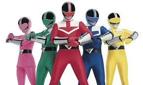

Sobre a Temporada
Power Rangers: Força do Tempo foi ao ar em 2001. Nessa temporada, os Rangers viajam no tempo para combater Ransik, um vilão do futuro que busca dominar o presente. A série é conhecida por sua narrativa envolvente e personagens marcantes.
Rangers Principais
- Ranger Vermelho: Wes Collins
- Ranger Azul: Lucas Kendall
- Ranger Rosa: Jen Scotts
- Ranger Verde: Trip
- Ranger Amarelo: Katie